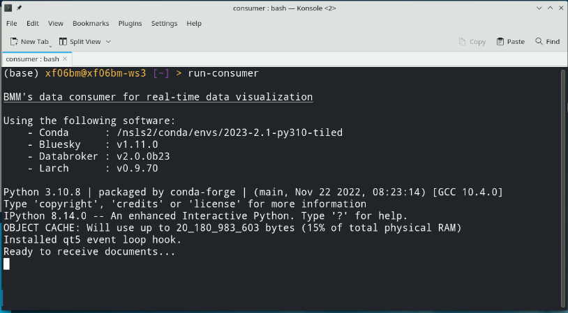
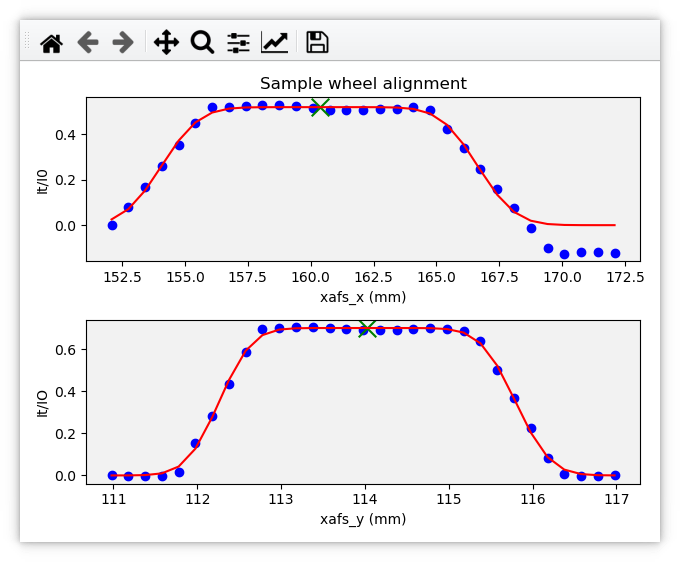
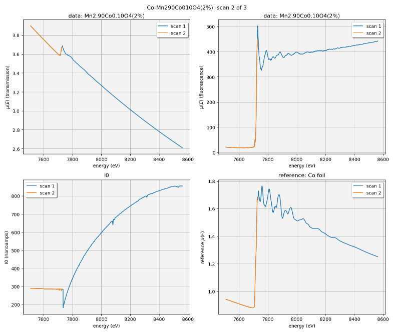
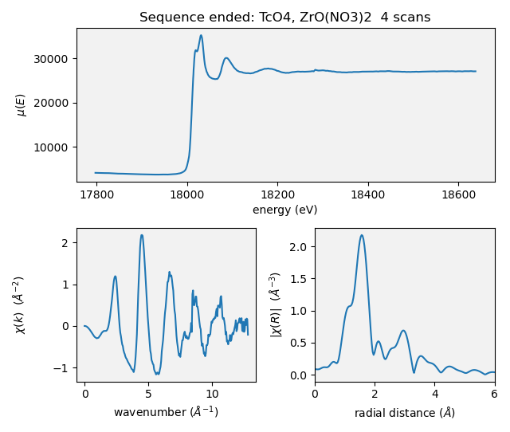

C. Plotting via Kafka at BMM#
For years, plotting at BMM used a BlueSky preprocessor and specially constructed functions for extracting data from Bluesky event documents. That was fine and provided useful real-time views of data for our users.
The problem with using these modified BlueSky LivePlots
is that they are tied to the machine which is running the Run Engine.
As BMM began to use BlueSky queueserver, which is
typically not run on the same machine as bsui, this plotting
scheme stopped being helpful.
The solution was to move all plotting chores out of the main data collection profile and into a Kafka consumer. Using the bluesky-kafka producer and consumer and with the help of DSSI, the beamline computers were given access to the same Kafka server used by BlueSky to orchestrate it’s communications. We were also given a private Kafka topic over which to send BMM-specific messages intended for use by a BMM-specific consumer.
C.1. Starting the Kafka consumer#
In the consumer/ folder, there is a bash script called
run-consumer. This script establishes the correct shell and conda
environments for running the data plotter. It then starts an ipython
instance, loads consumer/consume_measurement.py, and starts the
Kafka consumer.
For ease of use, run-consumer can be copied into $HOME/bin so
that it is in the execution path.
Bruce’s preference for this is to open a new terminal window on a
virtual desktop that is not the main desktop. In that terminal
window, run run-consumer.
{kind=link}

Fig. C.1 A terminal window in which the Kafka consumer has just been started.#
C.2. Various types of plots#
Communicating over the bmm-test topic, two sorts of plotting
chores are managed. In each case, the document is a simple dictionary
which the consumer parses to perform a plotting chore using
matplotlib.
Future Tech!
Would a browser-y solution like Bokeh be an alternative?
The dictionary sent as the document is not structured like a BlueSky document. There is no schema. The dictionary simply contains keywords which the consumer is programmed to recognize.
Over time, more plotting chores will be added to the consumer. At the time of this writing, these plotting chores are supported. The explanation here will hopefully lower the barrier of understanding how plotting via Kafka consumer works at BMM. It is, admittedly, a rather baroque system using a lot of infrastructure.
C.2.1. Live linescan plots#
At BMM, a linescan (Sec 6) is a scan where a motor is moved and a signal is plotted. A linescan begins by issuing a message telling the consumer to start a new plot and to begin looking for BlueSky event documents:
{'linescan' : 'start',
'motor' : 'xafs_x',
'detector' : 'I0',}
Those event documents will be parsed to obtain the result of the most recently measured data point. The new data point is added to the plot and the plot is redrawn.
When the linescan finishes, a stop message is issued:
{'linescan': 'end',}
This replicates very closely how the BlueSky LivePlot has been used to display linescsan data.
C.2.2. Live timescan plots#
With the BMM plotter, a timescan and a line scan are made with the same code. The only difference is that no motor is given for a timescan and the X-axis is plotted as the time stamp of the current point minus the time stamp of the first point. Thus the X-axis is in units of seconds. The signal plotted on the Y-axis is determined the same as for a linescan and all the internal mechanics of the time plot are the same as for a motor plot.
C.2.3. Live areascan plots#
Todo
Make and document live areascan plots. Currently, a
LivePlot is used when running areascan() and the Kafka
consumer replicates the plot afterwards. The replicated
plot has the correct axes and is saved in the dossier.
This (along with the %xrf plot) is the only remaining
plot not yet made via the Kafka consumer.
C.2.4. Alignment plots#
Various alignment chores at the beamline – for example, aligning a slot on a sample wheel (Sec 3.3) or aligning the glancing angle stage (Sec 3.6) – involve a series of linescans (Sec 6), each of which is plotted in real time – as shown below (Sec C.2.1) – followed by a plot summarizing the result of the alignment.
Using the sample wheel alignment as an example, the sequence is initiated by this document:
{'align_wheel' : 'start'}
As each linescan in the alignment procedure is completed, some automated analysis is performed to determine the optimal position of the motor axis being scanned. The results of this analysis are issued in a document like this.
{'align_wheel' : 'find_slot',
'motor' : 'xafs_x',
'detector' : 'it',
'xaxis' : list_of_axis_positions,
'data' : list_of_signal_values,
'best_fit' : list_of_fitted_values,
'center' : midpoint_value,
'amplitude' : amplitude_value,
'uid' : uid}
From this a plot showing the measured data and the results of the analysis is made.
Once all parts of the alignment procedure are finished, this document is issued:
{'align_wheel' : 'end'}
This tells the consumer to create a plot summarizing the results of the alignment.
The alignment of the glancing angle stage works in much the same manner.
{kind=link}

Fig. C.2 An example of the final plot for an alignment of the ex situ
sample wheel. The green X marks shows the aligned positions in
xafs_x and xafs_y.#
C.2.5. Live XAFS plots#
The problem of making live XAFS plots is quite similar to live linescan plots, but with some additional considerations:
It is common to make multiple repetitions of XAFS scans, thus successive scans should be overplotted.
There are various interesting views of the XAFS data, including both transmission and fluorescence of the data, transmission of the energy calibration standard, and a view of the raw I0 spectrum (to keep an eye on monochromator glitches and other issues).
Future Tech!
Panel for live χ(k) plots, begin plotting this panel, say, 60 eV above the edge.
Like with the linescan, the plot begins with a message issued to tell
the consumer to begin preparing for an XAFS plot and providing enough
information to make that plot. This start message is issued at
the beginning of the entire scan sequence.
{'xafsscan' : 'start',
'element' : 'Fe',
'edge' : 'K',
'mode' : 'fluorescence',
'filename' : 'example'
'repetitions': 3,
'sample' : 'Fe sample',
'reference_material': 'Fe foil', }
At the beginning of each individual repetition, a next message is
sent, telling the consumer to prepare to add a new set of traces to
the plot for the repetition about to begin.
{'xafsscan': 'next',
'count': 2, }
Finally, a message is sent telling the consumer that the sequence of scans has finished, putting the consumer back into a state where it is ready to receive the next sequence of messages for the next plot.
{'xafsscan': 'end',}
The plot that is made for an XAFS scan depends on whether fluorescence measurement is available. If so, a 2x2 grid is shown with the transmission and fluorescence μ(E) on the top, a plot of I0 on the bottom left, and plot of the transmission μ(E) of the reference material on the bottom right.
For a scan not using the fluorescence detector, the plot is a 3x1 grid of transmission μ(E), I0, and the reference spectrum.
{kind=link}

Fig. C.3 An example of the XAFS live plot made for a fluorescence XAFS scan.#
Note
I0 is now normalized by the dwell time, thus is plotting in units of amperes rather than ampere*seconds, as shown.
Also, as of January 2024, the live plot at the end of the scan sequence is posted to Slack and included in the dossier (Section 9.4).
C.2.6. Scan sequence data reduction#
At the end of a scan sequence, we show the user a 3-panel plot showing μ(E), χ(k), and χ(R). (This is the same 3-panel plot that is written to the dossier (Section 9.4). This plot is of the merge of the scans measured in the scan sequence. Behind the scenes, Larch is used to make the merge, remove the background function, and perform the Fourier transform. Additionally, every time an individual repetition in the scan sequence is finished, this 3-panel plot is made from the merge of the scans measured thus far.
At the beginning of a scan sequence, a Kafka document with a payload like this is issued:
{'xafs_sequence' : 'start',
'element' : 'Fe',
'edge' : 'K',
'folder' : BMMuser.folder,
'repetitions' : 3,
'mode' : 'fluorescence'}
The presence of the xafs_sequence key tells the Kafka consumer to
interpret this document as relevant to the creation of the 3-panel
plot. The value of start tells the consumer to prepare for making
this plot from data under the conditions specified by the remainder of
the keywords.
As each scan finishes, the following document is issued. This tells the consumer that a repetition finished and supplies the UID of the just-completed scan. Tiled is used to grab the data from the just-completed scan. This triggers a recalculation of the merge and the recreation of the 3-panel plot.
{'xafs_sequence' :'add',
'uid' : uid}
Finally, at the end of the scan sequence, this document is issued:
{'xafs_sequence' : 'stop',
'filename' : '/path/to/dossier/image'}
This tells the consumer to make the final version of the 3-panel plot using all the data and to save a png image of the plot for use in the dossier.
{kind=link}

Fig. C.4 An example of a 3-panel plot created by the Kafka consumer.#
This motif of issuing a start message to begin crafting a plot,
messages to add to the plot, and a message to stop the plot is
the common thread to how BMM uses Kafka to make plots, both static and
real-time plots.
C.3. Cleaning up the screen#
Most of the plotting options from the Kafka consumer are good about closing the last plot before starting a new one. However, linescans, in general, do not clean up prior plots.
You can close some or all of the plots made by the Kafka consumer by issuing a suitable message, either at the command line or in a plan.
This will close all plots on screen made by the consumer:
kafka_message({'close': 'all'})
This will close all plots associated with linescans, but not close plots associated with XAFS scans:
kafka_message({'close': 'line'})
And this will close the most recent plot:
kafka_message({'close': 'last'})